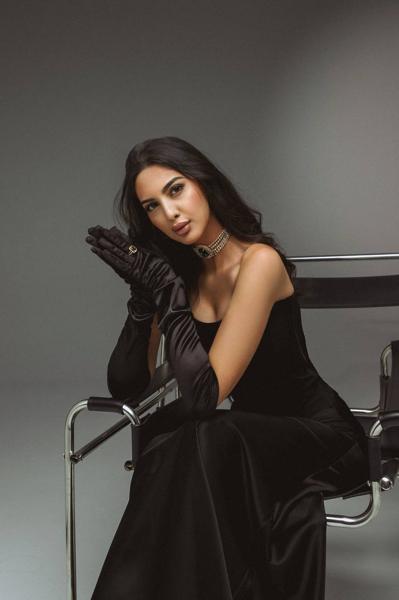
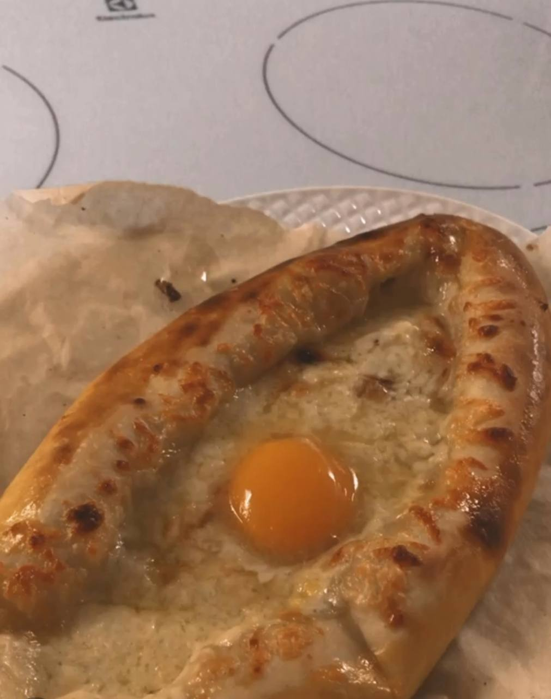
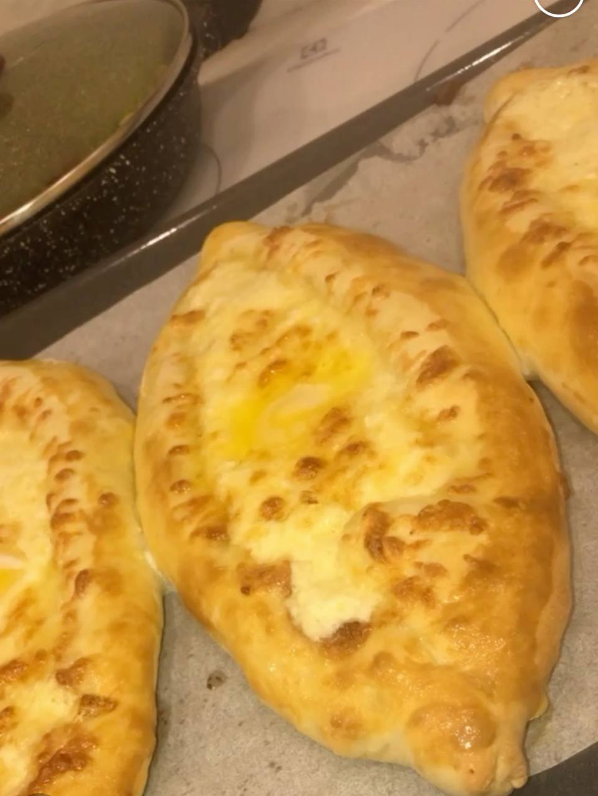
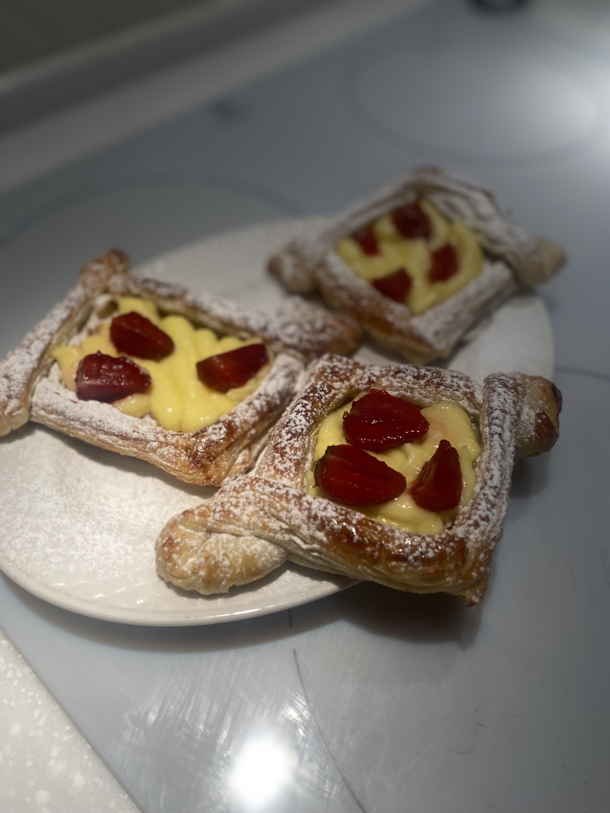
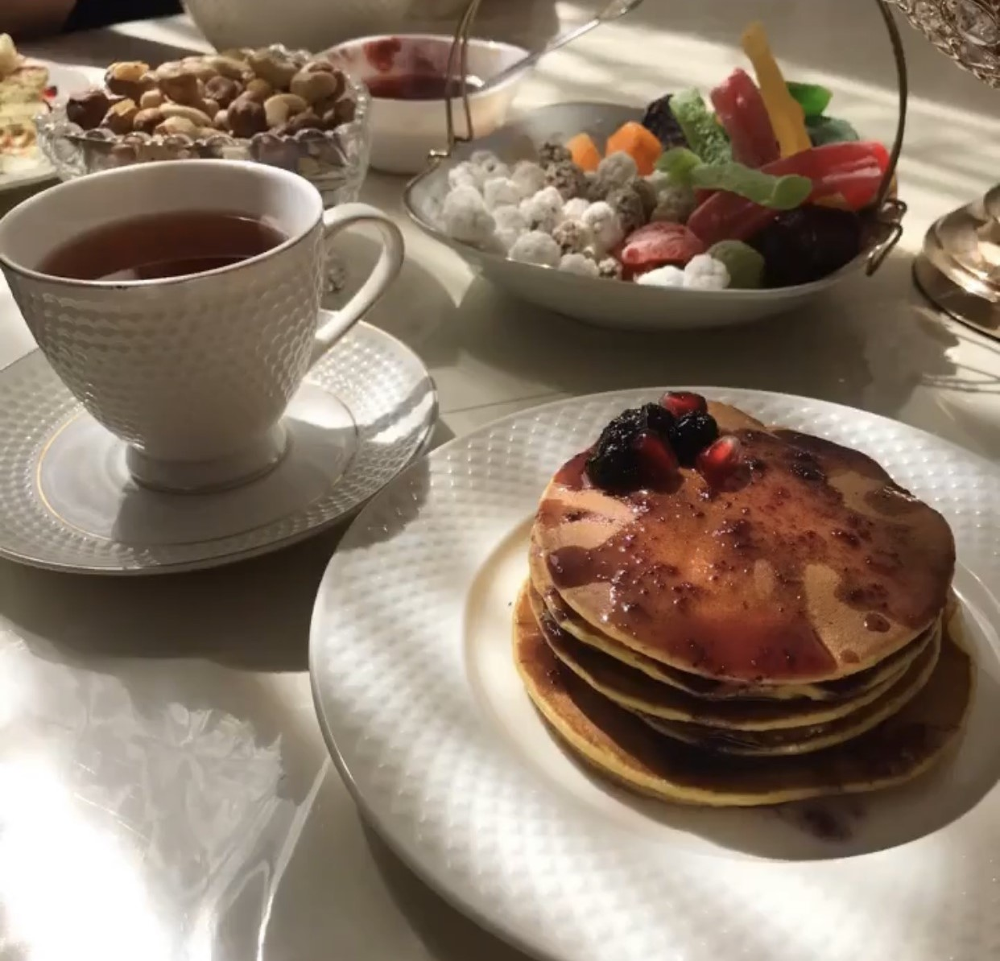
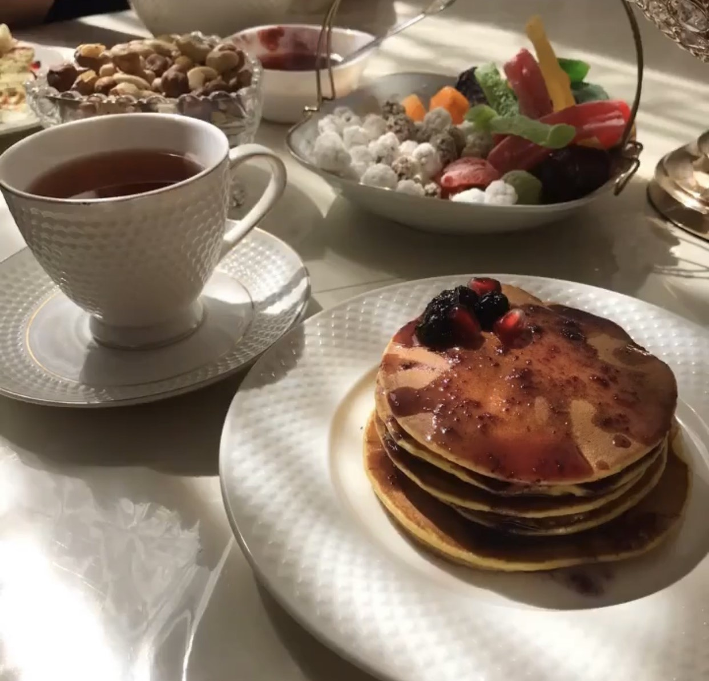

О себе
Меня зовут Аллазова Айша(УИР-1,3 курс) и я увлекаюсь кулинарией.
Мне нравится экспериментировать с новыми рецептами, добавлять в рецепты свои ингредиенты и готовить для семьи.
Я люблю готовить кухню разных стран: Азербайджанскую, Турецкую, Грузинскую, Белорусскую, Итальянскую и др.
Мои блюда
-
Азербайджанская


Я люблю готовить сладости булочки.
-
Турецкая


Я была два раза в Турции,после этого я очень полюбила турецкие блюда и так как у нас в Беларуси мало заведений с этой кухней, я люблю часто готовить эти блюда дома.
-
Грузинская
  -
Разное

 



Я люблю пробовать новые рецепты и создавать свои собственные блюда, комбинируя разные ингредиенты.
Приготовление блинов
-
Ингредиенты:
1 стакан муки
1 столовая ложка сахара
1 чайная ложка разрыхлителя
Щепотка соли
1 стакан молока
1 яйцо
2 столовые ложки растопленного сливочного масла
Масло для жарки
Инструкции:
1. Смешайте сухие ингредиенты
2. Добавьте мокрые ингредиенты:
3. Разогрейте сковороду:

4.Наполняем

5. Жарим блины: